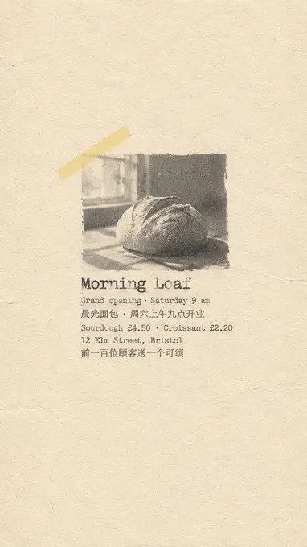
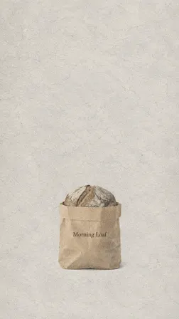
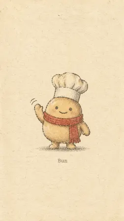
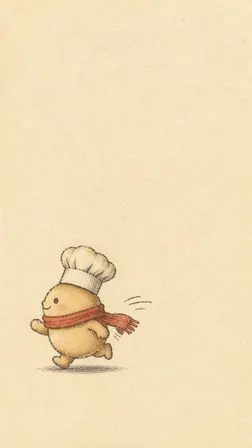
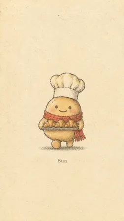
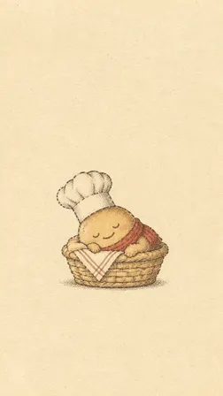

moonlin1213/muted-zine-poster-v01: image test, 2026-11-08
The same brief for every skill: a 3:4 poster for a made-up bakery with six exact lines of English and Chinese text, a square photo of a kraft-paper bag printed with the shop's name, and four square pictures of one mascot in four poses. Claude Code (Claude Opus 5.5) made them with the skill in a throwaway sandbox; every image call went to the newest model of the family the skill asked for (GPT Image 2.6, Nano Banana 2.1 or FLUX 3). 3.4 minutes; 7 image calls ($0.059), drawn by gpt-image-2.6-ext. All results · The brief · How it is scored
A muted zine look on 9:16 pages, with the mascot's name on its pictures.
Result
Broke a rule · a look of its own
- all six 9:16
- text on the mascot pictures
The pictures












The text, read letter by letter
Read by OCR (macOS Vision, five passes); a line OCR could not find as written was looked at by hand.
| Asked for | Written |
|---|---|
| Morning Loaf | right |
| Grand opening · Saturday 9 am | right |
| 晨光面包 · 周六上午九点开业 | right |
| Sourdough £4.50 · Croissant £2.20 | right |
| 12 Elm Street, Bristol | right |
| 前一百位顾客送一个可颂 | right |
| Morning Loaf (on the bag) | right |
The mascots (judged by a vision model)
| Same character in all four (1-5) | 5 |
|---|---|
| Poses as asked (of 4) | 4 |
| Chef's hat and red scarf in all four | yes |
| Text on them | yes |
The judge's note: All four clearly depict the same Bun with matching shape, colors, face, chef hat, and red scarf; text labels appear under images 1 and 3.
How it went (the session's closing message)
I've made all six pictures with the muted-zine-poster skill and saved them to `~/work/output/`. The skill only has prompts for its "Standard Mode", so I turned the brief into its four-paragraph prompts and sent them to OpenAI's image API (served by GPT Image 2.6), because the skill expects Codex's built-in image tool. - **`poster.png`**: a small faded grayscale photo of a sourdough loaf in window light on aged cream paper, with a pale yellow strip of paper across one corner. All six lines are there, and I zoomed in to check the spelling, the "·" separators and the £ signs. The first try wrote the last character of 可颂 wrong. The skill allows one retry with a tighter prompt, and the second try is correct. - **`product.png`**: a kraft bag on pale grey paper with a sourdough loaf peeking out of the top and "Morning Loaf" printed in dark brown. That is the only text. - **`mascot-1.png` to `mascot-4.png`**: Bun as an old-style printed illustration, waving, running left, carrying a tray of three croissants, and asleep in a wicker basket. I made 2 to 4 using mascot-1 as a reference image, and the body shape, face, chef's hat and red scarf match across all four. **Where the skill could not meet the brief:** its fixed tall portrait canvas replaced the brief's 3:4 and 1:1 ratios, and the files actually came back at 864×1536. That is 9:16, because the image service didn't keep the requested 960×1600 (3:5). Its rule that every image carries some text put a tiny "Bun" caption on mascot-1 and mascot-3, which the brief didn't allow. Its muted, sparse style also makes the bag less of a studio product shot and Bun's scarf a faded red. The prompts and generation scripts are in `~/work/gen/`. DELIVERABLE: ~/work/output/